P2
Outline
-
Motion Capture
- History and modern mocap systems
-
Motion Synthesis
- Motion retargeting
- Motion transition
- Motion graph
P3
Motion Capture
How to get motion data?
✅ 动画师制作，光学动捕、视觉动捕，外骨骼动捕，惯性传感器，动作估计。
P29
Motion Synthesis
How to use motion data?
P31
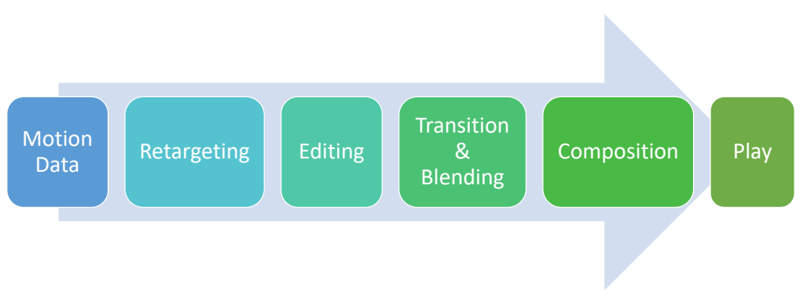
P32
Motion Retargeting
Retargeting要解决的问题
- Retarget a motion to drive a character with
- Different number of bones
- Different bone names
- Different reference pose
- Different bone ratios
- Different skeletal structure
- ……
P34
A possible retargeting pipeline
- Map bone names
- Scale translations
- Copy or retarget joint rotations to fix reference pose
- Postprocessing with IK
- Foot-skating
- Self penetration
- ……
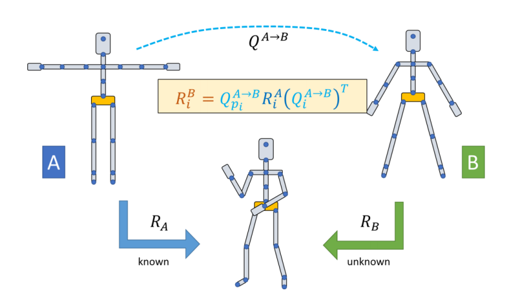
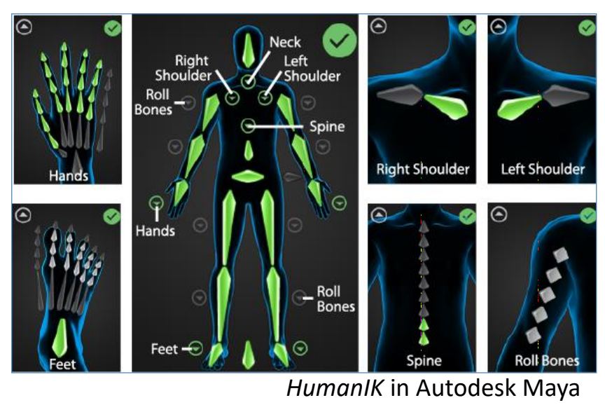
P38
Motion Transition
✅ 有一段走路数据和跑步数据，如何实现人由走到跑的过程。
方法一
| 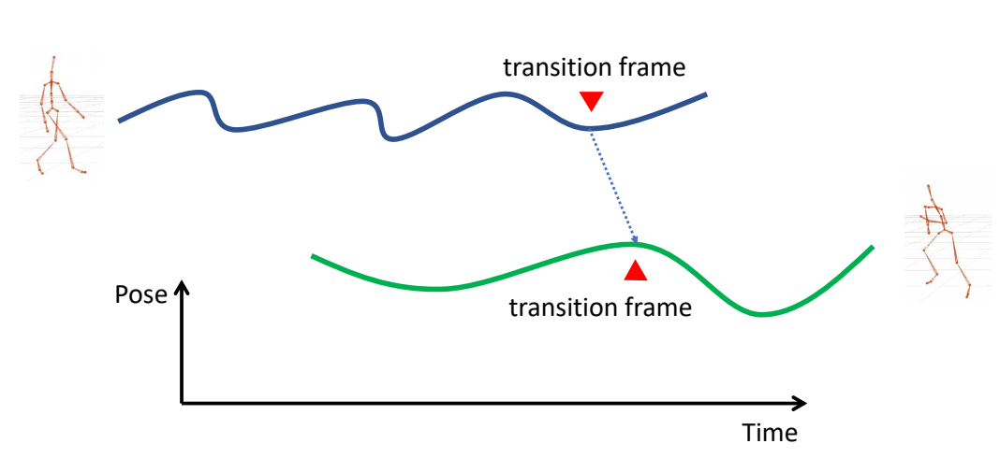 | ✅（1）找到两个 motion 中相似的一帧。 |
| 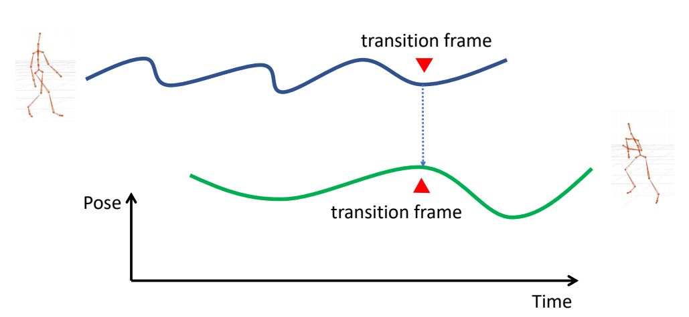 | ✅（2）两帧在时间上对齐 |
| 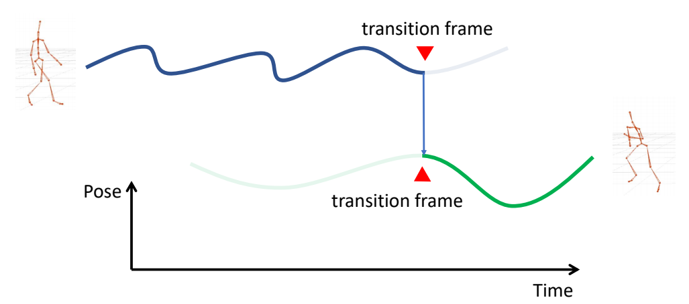 | ✅（3）放到这一帧时动作切换。 |
✅ 缺点：会有明显间断。
方法二
| 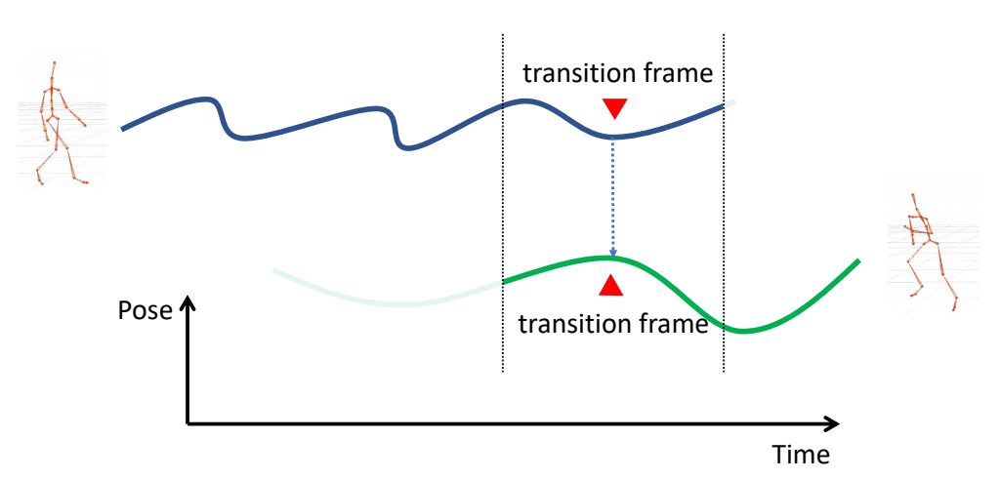 | ✅ 改进：考虑前后帧，并做插值。 |
| 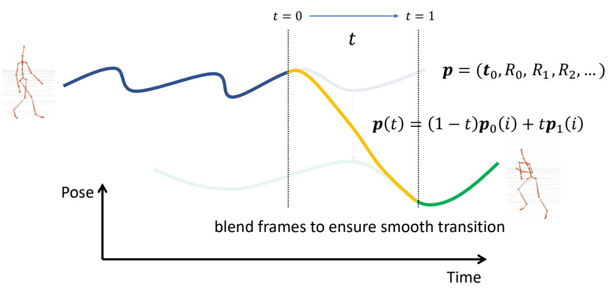 |
P46
$$ p(t)=(1-\phi (t))p_0(i)+\phi (t)p_1(i) $$
✅ 不一定非要线性插值，定义 \(\phi (t)\)，或其它混合策略
✅ 可能存在的问题：（1）突然转向（2）滑步
✅ 当走和跑分别是朝不同方法时会出现以上问题。
✅ 解决方法：插值之前动作对齐
P55
“Facing Frame”
定义坐标系
每个角色有自己的角色坐标系，定义为：
A special coordinate system that moves horizontally with the character with one axis pointing to the “facing direction” of the character
✅ 原点：Hip 在地面上的投影
✅ 坐标轴：参考姿态下 \(y\) up \(z\) forward.且旋转和平移都受到限制。
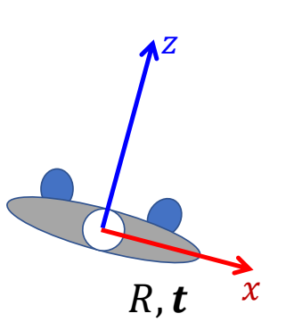
$$ \begin{align*} R & = \theta e_y \\ t & = (t_x,0,t_z) \end{align*} $$
✅ 也可以为不同的的场景定义不同的 \(R\) ，例如上下半身的 \(y\) 轴旋转方向不同。
- Possible definitions of \(R\)
- \(R\) is the y-rotation that aligns the z-axis of the global frame to the heading direction
- \(R\) is the y-rotation that aligns x-axis of the global frame to the average direction of the vectors between shoulders and hips
- Decomposition root rotation as \(R_0=R_yR_{xz}\)
P58
动作分解
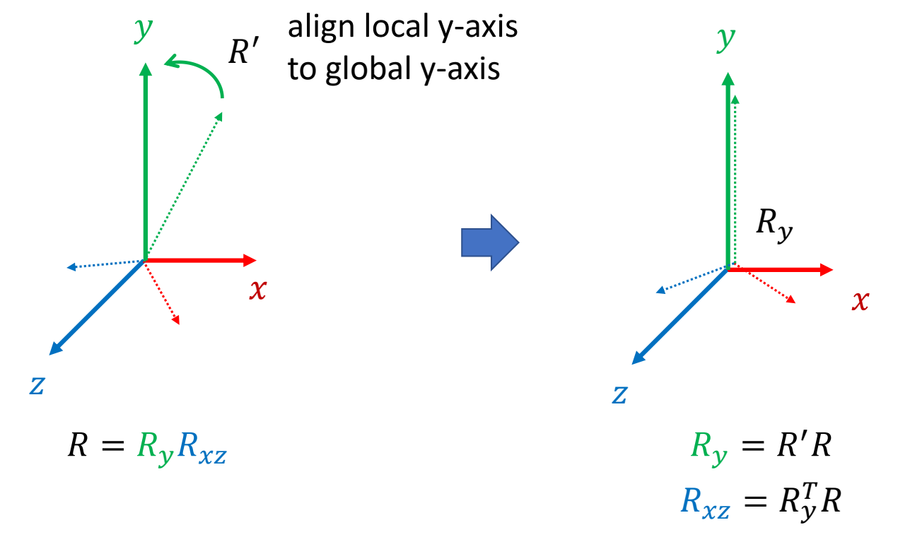
✅ 把 \(R\) 分解为 \(R_y\) 和 \(R_{xz}\)，求 \(R_y\)
✅ \({R}' \) 能够把 local y-axis 转到 global y-axis 的矩阵。
P62
动作合成
- How to compute this transformation?
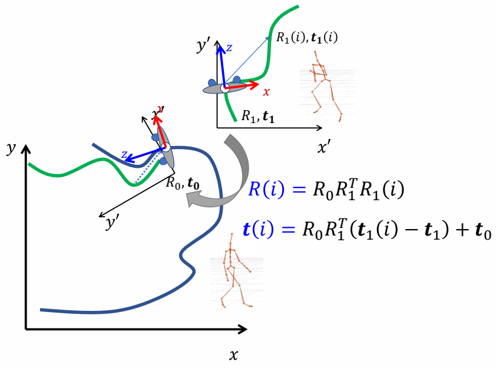
✅ 两个坐标系的转换。
P68
Path Fitting
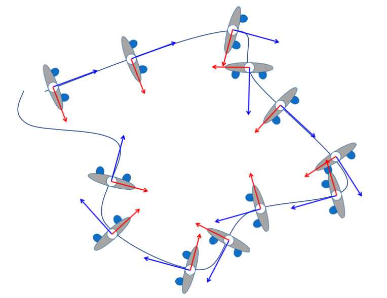
👆 让角色跟着轨迹移动。
P69
Motion Composition
Computationally generating motions according to
- User control
- Objects in the same environment
- Movements of other characters
- ……
P70
Motion Graphs
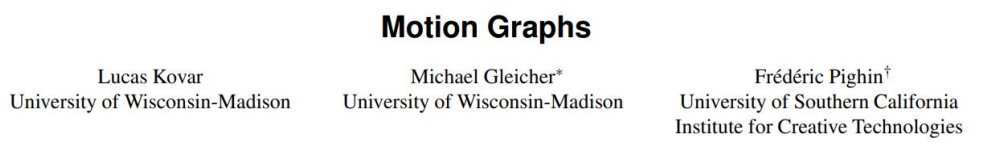
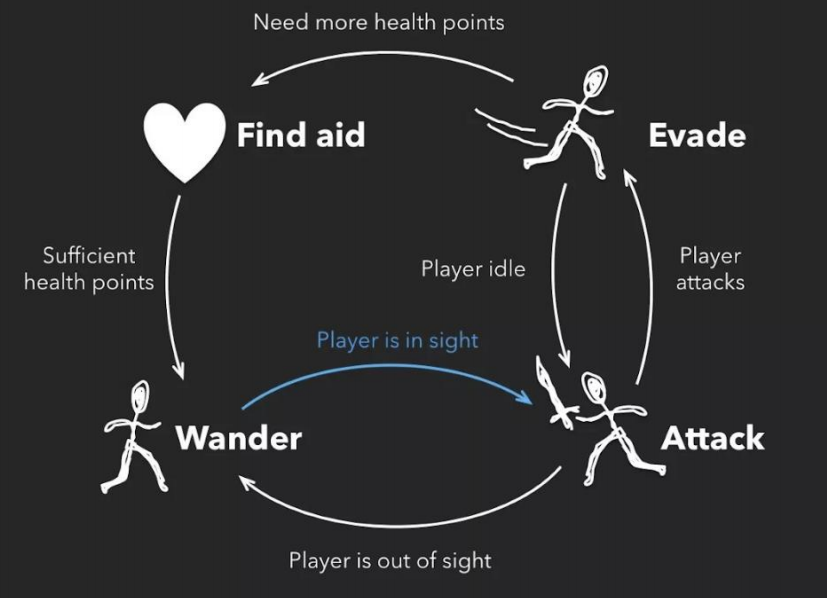
👆 动作图的本质是状态机。
P72
Segment Motion Data
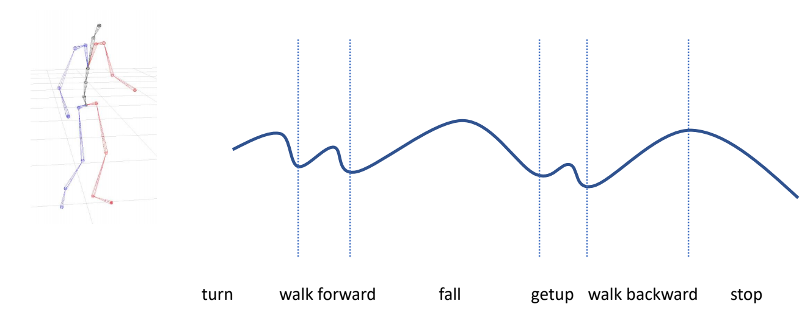
✅ 一段动捕数据，如何做分割，如何确定哪些点可以连到一起。
✅ Distance 可以有多种定义方式。
✅ 根据图确定分段与连接。
P73
建立动作转移关系
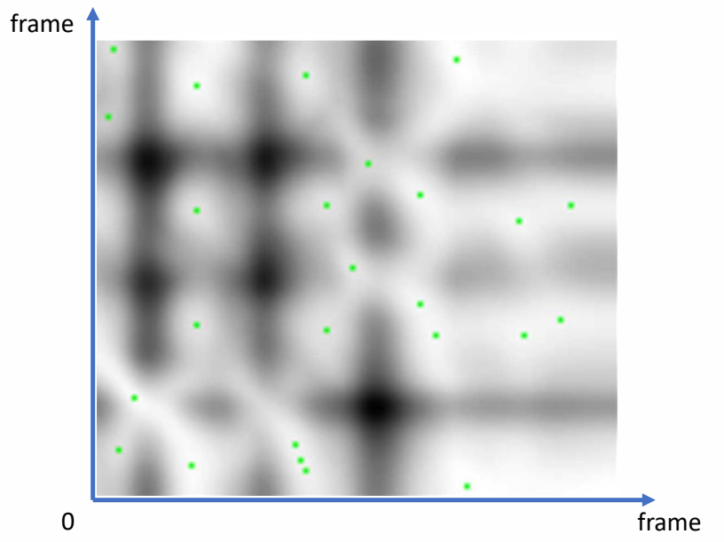
- Distance map
- Each pixel represents the difference between a pair of poses
- Local minima are potential transition point
🔎 Motion graphs Lucas Kovar, Michael Gleicher, and Frédéric Pighin. 2002.
ACM Trans. Graph. 21, 3 (July 2002),
P74
Motion Synthesis
- State-machines
- Nodes represent motion clips
- Edges represent potential transitions
- Transitions are triggered when necessary
- User input
- Clip end
- Check immediate connections for the next clip
- May need deeper search
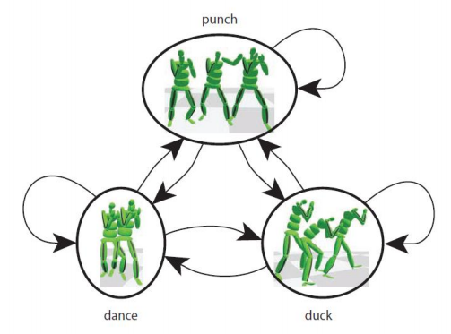
P75
Interactive Animation Pipeline
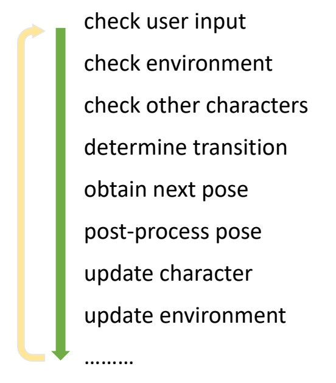
✅ 优点：根据路线从动作库中选择最合适的动作，而不是直接使用路线，因此减少滑步。
✅ 缺点：(1) 动作多时动作复杂。
(2) 一个片断播完再切动作，响应较慢。
(3) 需要提前规划好动捕动作。
✅ 如果数据集里没有想要的姿态，可以结合 IK.
P78
Motion Matching?
- Clip → Pose
- Short clip → “Raw” and long motion data
✅ 切换粒度更细：1帧 or 0.1 s．
✅ 灵活性提升，可控性欠缺。
本文出自CaterpillarStudyGroup，转载请注明出处。
https://caterpillarstudygroup.github.io/GAMES105_mdbook/